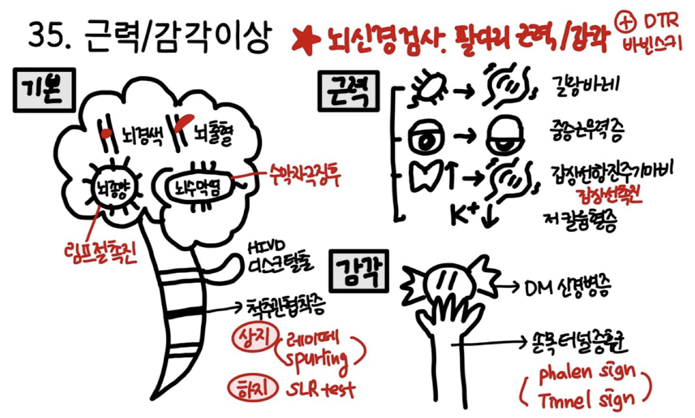
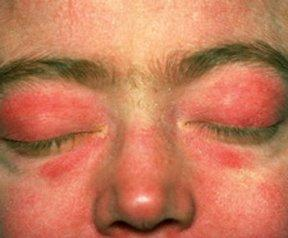
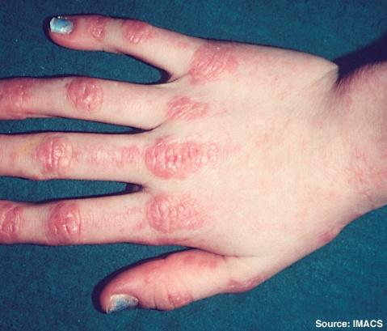
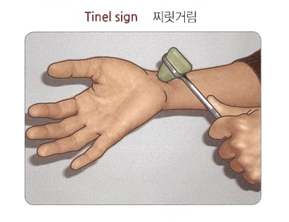
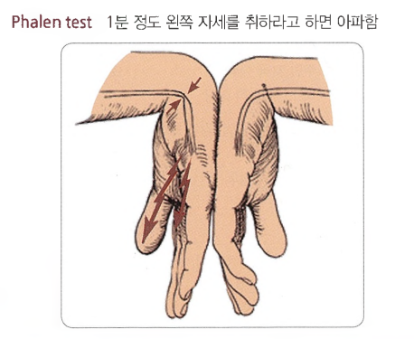

8. 근력/감각이상

원인 | ||
뇌질환 | 뇌졸중(뇌경색/뇌출혈), 뇌종양 | |
척수질환 | 척수염, 추간판 탈출증 | |
신경뿌리질환 | 추간판 탈출증, 척추관 협착증 | |
말초신경질환 | 다발성 말초신경병, 길랑-바레 증후군, 국소 말초신경병(손목터널증후군) | |
신경-근육 접합부 | 중증근무력증 | |
근육 | 염증성근병증(다발근염/피부근염) | |
기타 | 대사장애(저칼륨혈증), 약물(스타틴) | |
평가목표 1) 원인 부위 추정: 뇌, 척수, 신경뿌리, 말초신경, 신경-근육 접합부, 근육 2) 진단 및 치료 계획 수립 3) 응급치료가 필요한 환자 감별 | ||
구체적인 성과 | ||
병력청취 | 근력약화와 감각이상의 양상 | 급성(수초~수분): 뇌경색, 뇌출혈 의심. 아급성/만성(수일~수개월): 뇌종양, 염증성 질환, 퇴행성 질환 의심.
편측성: 뇌 질환(중추신경계) 의심. 양측성(대칭): 척수 질환, 다발말초신경병, 근육 질환 의심.
근위부(어깨, 골반/허벅지) 약화: 근육 질환(근염 등) 의심 (예: 계단 오르기, 머리 빗기). 원위부(손/발끝) 감각 이상: 다발말초신경병증 의심 (예: 젓가락질 곤란, 단추 채우기).
Glove & Stocking: 당뇨병성 말초신경병증 등. Dermatome 분산: 신경뿌리 질환(추간판 탈출증 등). Sensory Level 존재: 척수 질환(가로척수염 등). (예: 명치 아래로 감각 소실)
일중 변동/활동 시 악화: 중증근무력증 의심 (아침에 양호, 오후/운동 후 악화). |
| 관련된 동반 증상 | 뇌신경 증상: 안면 마비, 구음장애, 연하곤란, 복시/안검하수 척수/자율신경 증상: 요실금, 배뇨 지연, 변비/변실금 통증 동반: 추간판 탈출증, 척추관 협착증, 염증성 근염 |
| 응급을 요하는 적신호 | 뇌경색/뇌출혈: 편측 마비, 안면 비대칭, 언어 장애, 균형 상실 호흡근 마비: 호흡곤란 동반 척수 압박: 하지 근력 소실, Sensory level 관찰, 대소변 장애 뇌압 상승: 극심한 두통, 분출성 구토, 의식 저하 |
신체 진찰 | 신경 진찰 | 뇌신경검사: 동공반사, 안구운동, 안면 감각/운동, 혀 내밀기 상하지 감각: 피부분절에 따른 좌우 대칭 비교, 감각 경계선 찾기 상하지 근력: 근력 등급 측정, 근위부/원위부 비교, 근위축 관찰 심부건 검사: 항진- UMN 병변, 저하- LMN 병변 소뇌기능검사: Finger to nose, Heel to shin, Romberg, Tandem gait
Phalen’s test: 양 손등을 맞대고 90도로 꺾어 1분간 유지 시 저림 유발 요추 추간판탈출증 SLR test: 누운 상태에서 다리를 곧게 편 채로 들어 올려 방사통 유발 여부 확인 경추 추간판탈출증 Spurling's test: 목을 아픈 쪽으로 젖히고 위에서 눌렀을 때 팔로 뻗치는 통증 확인 중증근무력증 Fatigability test: 위를 1분 이상 지속적으로 쳐다보게 하여 눈꺼풀 처짐이 점점 심해지는지 확인 이외: 경동맥 청진, 말초 동맥 촉진(발등맥박) |
진단 및 치료 | 진단 | 1. 영상 검사: 뇌/척추 CT/MRI 2. 전기생리학 검사: 근전도(EMG)/신경전도(NCS) 검사, 반복신경자극검사(RNS) 3. 혈액검사: 전해질(K), 근육 효소(CPK, LDH), 대사(혈당, vit B12), 항체(ANA 등) 4. 뇌척수액 검사 |
| 신속한 진단이 필요한 환자 | 뇌졸중: 갑자기 발생한 편측 마비, 안면 마비, 구음 장애, 의식 저하 마미 증후군: 회음부 감각 소실, 하지 근력 저하, 대소변 조절 기능 상실 호흡근 부전 위험: 호흡곤란, 연하곤란 |
| 치료(급성조치 포함) | - 뇌경색: 발병 4.5시간 이내 정맥내 혈전용해제 - 마미증후군: 응급 척추 감압 수술 및 고용량 스테로이드 정맥 투여 - 길랑-바레 증후군: 정맥내 면역글로불린(IVIG) 투여 또는 혈장교환술 시행. - 중증근무력증 위기: 기도 삽관 및 기계 환기, 면역글로불린(IVIG) 또는 혈장교환술. - 저칼륨혈증 주기성 마비: 심전도(EKG) 모니터링 하에 칼륨(K+) 정맥 또는 경구. 추간판 탈출증/척추관 협착증: 급성기 침상 안정. ● 약물 치료(진통소염제-NSAIDs, 근육이완제). ● 물리 치료 및 경막 외 스테로이드 주사. ● 보존적 치료 실패나 마비 진행 시 수술 당뇨병성 다발말초신경병증: ● 엄격한 혈당 조절. ● 신경병증성 통증 완화제 투여(프레가발린, 가바펜틴, 항우울제 등). ● 당뇨발 예방을 위한 발 관리 교육. 수근관 증후군: ● 손목 부목 고정. ● 소염진통제 복용 및 손목 터널 내 스테로이드 국소 주사. ● 심한 근위축 동반 시 수술적 치료 고려 |
환자교육 | 신속한 검사와 응급치료 | 뇌졸중 경고 징후 교육: 갑작스러운 한쪽 팔다리 마비, 안면 비대칭, 발음 어눌함, 극심한 두통 발생 시 지체 없이 119를 통해 응급실로 내원하도록 교육 (발병 후 4.5시간 이내 골든타임의 중요성 강조). 호흡근 마비 징후 교육: 다리에서 시작된 마비나 무력감이 가슴 위쪽으로 올라오며 숨쉬기 답답해지거나 사레가 심하게 들리는 경우(길랭-바레 증후군, 근무력증 위기 의심), 질식 위험이 있으므로 즉시 응급실 내원 지시. 척수 압박 징후 교육: 허리 통증과 함께 갑자기 양쪽 다리에 힘이 빠지거나 대소변 조절 기능 상실(요실금, 변실금, 소변을 못 봄) 발생 시, 영구적 하반신 마비 방지를 위해 즉각 내원하도록 교육 (마미 증후군 위험). |
|
|
|
질환 | 질환 설명 | 병력청취 | 신체진찰 | 검사 | 치료 | |
뇌 | 뇌경색 TIA 1+1 | 뇌로 가는 혈관이 막혀 뇌 조직을 손상시킴 (TIA는 일시적) | 갑자기 발생한 국소 신경학적 이상(주로 편측), 고령, 기저질환 | 안면마비, 상하지 근력저하, 감각 소실, DTR 항진, 병적반사 | 뇌 CT/MRI, 심초음파, 경동맥초음파 | 혈전용해제, 혈전제거술, 항혈소판제 |
| 뇌출혈 4+1 | 뇌혈관이 터져 피가 고이면서 주변 뇌 신경을 압박하고 손상시킴 | 벼락 두통, 분출성 구토, 의식저하, 경련 | 고혈압, 의식저하, 수막자극징후 | 뇌 CT/MRI, 요추천자, 뇌혈관조영술 | 혈압 조절, 뇌압 강하제, 수술적 혈종 제거, 코일 색전술 |
| 뇌종양 | 뇌에 비정상적인 종양이 자라나면서 뇌 신경을 누르고 손상시킴 | 두통 및 구역/구토, 성격 변화, 경련, 체중감소, 시야장애 | 유두부종, 편측 마비, 소뇌기능 이상 | 뇌 CT/MRI, 조직검사 | 방사선치료, 항암치료, 수술 등 원인질환에 맞는 치료 |
척수 | 척수염 | 척수에 염증이 생겨, 염증이 발생한 척수 부위 아래쪽에 감각 이상과 근력 마비 | 수일에서 수주 내에 걸쳐 진행, 최근 바이러스 감염, 대소변 장애, 띠 모양 통증 | Sensory level 관찰, 병변이하 마비, 초기 DTR 감소, 후기 항진 | 척추 CT/MRI, 요추천자 | 고용량 스테로이드 정맥 투여, 혈장교환술, 면역글로불린 |
| 다발성 경화증 | 면역 체계가 수초를 공격하여, 시력 저하나 감각 이상 등 나타남 | 호전과 재발을 반복, 여러 신경계 부위에서 증상 발생, 시력저하, 안구통증 | 시력저하, 시야이상, 감각/운동 이상 | 뇌/척수 MRI, 뇌척수액 검사 | 고용량 스테로이드, 면역조절제 |
신경 뿌리 | 추간판 탈출증 | 디스크가 튀어나오면서 옆을 지나는 신경 뿌리를 누름 | 한쪽 다리나 팔을 따라 전기가 통하듯 뻗쳐 내려가는 방사통 및 저림 | SLR test, Spurling test 양성, 분절 감각저하, 위약 | 척추 MRI, X-ray, EMG/NCS | 소염진통제, 물리치료, 경막외 스테로이드 주사, 수술 |
| 척추관 협착증 | 척추관 자체가 좁아지면서 신경을 전체적으로 압박 | 서서히 진행, 간헐적 파행, 감각저하, 근력저하 | Extension 시 통증, SLR 음성 | 척추 MRI, 척추 CT, X-ray | 약물 치료(진통제, 혈관확장제), 신경 차단술, 척추관 확장 수술 |
말초 신경 | 길랑 바레 증후군 0+1 | 면역 체계에 이상이 생겨, 발끝에서부터 시작된 근력 마비가 수일 내에 상체 쪽으로 빠르게 진행 | 양쪽 발끝에서 시작되어 상행하는 대칭성 근력 마비, 호흡 곤란, 음식 삼키기 곤란, 증상 발생 1~3주 전 감기 | 대칭성 이완성 근위약, DTR 저하 또는 소실, 호흡곤란 | NCS, 뇌척수액 검사 | 정맥 면역글로불린 투여, 혈장교환술 |
| 당뇨성 신경병증 1+1 | 오랜 기간 앓은 당뇨병으로 인해 미세 혈관과 말초 신경이 손상 | 양쪽 발끝과 손끝이 화끈거리거나 시리고 저림 | 양측 손발 감각 저하, 발 궤양 | 신경전도 검사, 혈당 및 당화혈색소 검사, 자율신경 기능 검사 | 혈당 조절, 신경병성 통증 조절제(가바펜틴), 발 관리 |
| 수근관 증후군 1 | 수근관이 좁아져 정중신경이 눌림 | 1, 2, 3번째 손가락, 4번째 손가락 절반 및 손바닥의 저림과 통증. | Tinel sign 양성, 네번째 손가락 절반까지 감각저하, 엄지두덩 근육위축 | 신경전도 및 근전도 검사, 손목 초음파 | 손목 부목 고정, 스테로이드 주사, 수술적 수근관 유리술 |
| 노신경 마비 | 외부 압박으로 인해 팔을 지나는 노신경이 손상 | 손목과 손가락을 위로 들어 올리지 못함, 손등 부위 감각 저하 | Wrist drop, 손등 감각 저하 (엄지 검지 사이) | 신경전도 및 근전도 검사 | 자연 회복 대기, 손목 부목, 물리치료 |
NMJ | 중증 근무력증 | 신경의 명령이 근육으로 전달되는 연결 부위에 면역 이상 | 안검하수, 복시 오후가 되거나 운동을 지속할수록 힘이 빠지고 휴식하면 호전 | 안검하수, 복시, 피로도 검사 양성, 얼음팩 검사 양성 | 반복신경자극검사, 항아세틸콜린수용체 항체 검사 | 항콜린에스테라제(피리도스티그민), 스테로이드, 흉선절제술 |
근육 | 염증성 근병증 | 근육 조직 자체에 자가면역 반응으로 염증 | 양측 대칭적인 근위부(큰 근육) 근력 약화, 감각 이상은 없음 | 근위부 근력 저하, 감각 정상, Heliotrope rash, Gottron’s papules | 근육 효소 수치(CPK, LDH) 측정, 근전도 검사, 근육 생검 | 고용량 스테로이드, 면역억제제 |
내 분 비 | 갑상샘 독성 주기 마비 | 갑상선항진증 환자가 과식, 운동 등으로 체내 칼륨 수치가 떨어지면서, 팔다리에 마비 | 근위약 과식, 음주, 운동 후 발생, 갑상선항진증 병력 | 양하지 위주의 급성 이완성 마비, 빈맥, 손떨림 | 전해질 검사(K+ 저하 확인), TFT, 심전도 | 저칼륨혈증 교정, 베타차단제 |
| 비타민 B12 결핍 | 신경 세포를 건강하게 유지하는 데 필수적인 비타민 B12가 체내에 부족 | 손발 저림, 눈 감고 서 있거나 걸을 때 비틀거림 과거 위 절제 수술력, 엄격한 채식주의자. | 양하지 진동각, 고유감각 소실, Romberg 양성 | 혈중 비타민 B12 수치, CBC, 척추 MRI | 비타민 B12 주사, 원인 질환 치료 |


Heliotrope rash Gottron’s papule
O | 언제부터, 갑자기/서서히, 어떤 상황 | ||
L | (open Q) 힘이 빠진/감각이 이상해진 부위를 모두 말씀해주세요 현재 다른 곳은 어디어디?
**편측: r/o 뇌졸중 **근위: r/o 염증성 근병증, 중증근무력증, 갑상샘주기마비 | ||
D | 얼마나 지속되는지, 빈도 | ||
Co | 점점 심해지나 | ||
Ex | 이전에도 이런 적? -> 치료? | ||
C | Open) 힘이 빠지는게 구체적으로 어떤 느낌? [양상] 운동) 움직이기 힘들다는 의미? 어느 정도까지 움직일 수 있나? (걸을 때, 물건 잡을 때) 감각) 감각이 이상하기도 한가요? 저림/둔해짐/통증 [정도] 일상생활에 지장이 있나요? NRS | Open) 감각이 이상해진게 구체적으로 어떤 느낌? [양상] 감각) 저림/둔해짐/통증 운동) 힘이 빠지거나 잘 못 움직이기도 한가요? 어느 정도까지? [정도] 일상생활에 지장이 있나요? NRS | |
F | 악화, 완화 요인 (쉬면 나아지나요?) *과음/과식/운동 r/o 갑상샘 주기 마비 | ||
A | [전신] 발열/오한/체중변화/피로 [뇌] 두통/시야장애/말 어눌/보행이상/구역/구토 [척수]: 배변 및 배뇨장애 (r/o 척수염, 마미증후군) [신경뿌리]: 목/허리 통증 (r/o 추간판탈출증, 척추관협착증) [말초신경]: 발열/최근 감기/예방접종 (r/o 길랑바레) 작열감/따끔거림/밤에 심해지는 통증/족부궤양 (r/o 당뇨병성 신경병증) [신경-근육 접합부]: 안검하수/복시 (r/o 중증근무력증) [근육]: 눈 주위 보라색 홍반/손등 발진 (r/o 피부근염) [내분비]: 더위불내성/두근거림/설사 (r/o 갑상샘 주기 마비) | ||
E | 건강검진 이상 소견 | ||
외 | 머리/허리-> 외상/수술 | ||
과 | 고혈압/당뇨/간염/결핵 + 고지혈증/뇌졸중/갑상샘 질환 | ||
약 | 복용중인 약물? | ||
사 | 음주/흡연/직업/스트레스/식습관/운동 | ||
가 | 고혈압/당뇨/고지혈증/뇌졸중/신경계질환 | ||
여 | 규칙성, LMP, 임신 가능성 | ||
PEx | 동의 구하기 손 씻기 **환자 거동이 불편할 수 있음. 자리 옮길 때 물어본 후 부축해주고, 보행이 불가한 경우 일부 검사 생략 | ||
| 기본
| V/S 확인 (혈압, 맥박, 호흡수, 체온) 1 눈: 안검하수, Heliotrope rash, 2 입: 탈수 3 목: 갑상샘 촉진 (r/o 갑상샘 주기 마비), 경동맥 청진 (r/o 뇌졸중) 4 사지: 피부 긴장도 Gottron’s papule 5 뇌신경검사: 동공반사, 안구운동(복시), 얼굴감각/운동 6 소뇌기능검사: Finger-to-nose, Rapid alternating test
일어서서 7 Romberg test, Tandem gait (침대로 걸어가며) 8 팔다리 감각/운동/DTR (상하지 모두) 9 병적 반사: Babinski sign, Ankle clonus 10 수막자극징후 11 특이검사: 경추 추간판탈출증: Spurling’s test, Lhermitte sign 요주 추간판탈출증: SLR test, Patrick test 수근관증후군: Tinel sign, Phalen test(60초)   | |
| 협조해주셔서 감사합니다. 불편한 건 없으셨나요? 손씻기 문진과 신체진찰 완료했는데, 특별히 걱정되거나 궁금한 점 있으신가요? | ||
검사, 치료 | 기본 | 1. 뇌/척추 CT, MRI (중추 1st DOC) 2. 신경전도검사 (말초 1st DOC) 3. 혈액검사 | |
| 치료 | 뇌출혈- ICH: 혈압 조절, 뇌압 강하제, 수술적 혈종 제거, 뇌출혈- SAH: 혈압 조절, 수술적 치료, 코일 색전술, 클립결찰술 뇌경색: 혈전용해제(t-PA), 혈전제거술, 항혈소판제, 항응고제, 위험요인 관리 TIA: 항혈소판제, 항응고제, 위험요인 관리 당뇨병성 신경병증: 혈당 조절, 약물치료(가바펜틴, 프레가발린), 발 관리 길랑-바레 증후군: 정맥 내 면역글로불린, 혈장교환술, 호흡근 마비 감시 수근관증후군: 손목 부목, 소염진통제, 수근관 내 스테로이드 주사, 수근관 유리술 | |
교육 | [안심] OOO는 철저한 관리와 치료가 필요합니다. 증상이 심해지기 전에 병원에 잘 오셨습니다.
[응급] 뇌- 갑작스러운 한쪽 팔다리 마비, 안면 비대칭, 발음 어눌함, 극심한 두통 발생 시(뇌졸중) 지체 없이 119를 통해 응급실로 내원 신경뿌리- 허리 통증과 함께 갑자기 양쪽 다리에 힘이 빠지거나 대소변 조절 기능 상실 발생 시, 영구적 하반신 마비 방지를 위해 즉각 내원하도록 교육 (마미증후군) 말초신경- 숨쉬기 답답해지거나 사레가 심하게 들리는 경우(길랑-바레 증후군, 근무력증 위기 의심), 질식 위험이 있으므로 즉시 응급실 내원
[회피] 낙상 방지: 다리 근력 저하 및 균형 감각 소실로 인한 낙상 및 골절 위험 경고 손발 끝 감각이 무뎌진 환자의 경우, 뜨거운 물에 데이거나 날카로운 것에 찔려도 통증을 느끼지 못해 조직 괴사로 이어질 수 있으므로 맨발 보행 금지, 목욕 전 물 온도 확인 등 철저한 안전 관리 교육.
[교정] 술/담배는 뇌혈관 건강에 위험하므로 중단. 또한 혈관이 좁아지는 것을 막기 위해 기름지고 짠 음식을 피하기. 과일과 채소를 많이 먹기. 운동은 일주일에 4-5회씩, 한 번할 때 30분 이상 땀이 날 정도로.
말초신경병증: 힘이 빠진 곳은 너무 무리해서 쓰지 않도록 하고, 필요하다면 보조구 사용 | ||
PPI | 오늘 많은 내용을 말씀드렸는데 잘 이해되었나요? 궁금하신 점 있으실까요? | ||